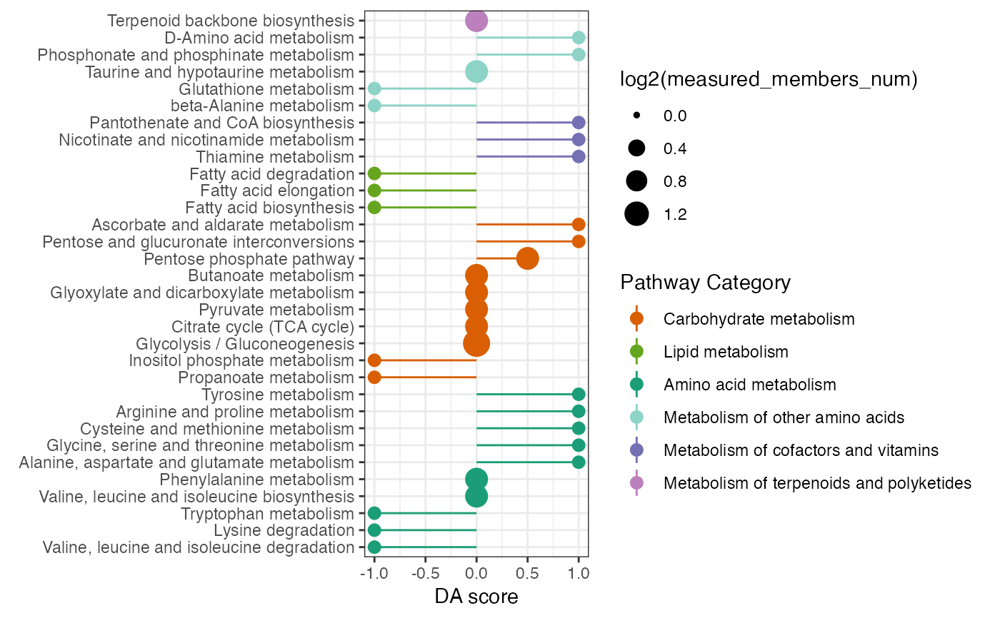

Differential abundance (DA) score
DAscore.RdCalculate the differential abundance (DA) score and visualization the DA score
Usage
DAscore(
increase_members,
decrease_members,
all_members,
sort_plot = NA,
min_measured_num = 2,
out = "metabolite"
)Arguments
- increase_members
the increased gene symbols and (or) metabolites' kegg id
- decrease_members
the decreased gene symbols and (or) metabolites' kegg id
- all_members
the all measured gene symbols and (or) metabolites' kegg id
- sort_plot
the method of pathway rank in the plot,Default rank by DA score. if value is category, then rank by pathway category
- min_measured_num
the minimum measured members that be ploted in a pathway, Default the value is 2.
- out
the analysis type,default "metabolite", alternative is "gene" and "Extended"
Examples
name <- c("C00022","C00024","C00031","B4GALT2","AGPAT3","FHIT")
DAscore_result <- DAscore(c(name[1], name[4]),
name[2], name, min_measured_num = 0,
sort_plot = "category")
DAscore_result$result
#> # A tibble: 32 × 10
#> Pathway DA_score Increase_members_num Decrease_members_num
#> <chr> <dbl> <int> <int>
#> 1 Propanoate metabolism -1 0 1
#> 2 Inositol phosphate metabo… -1 0 1
#> 3 Fatty acid biosynthesis -1 0 1
#> 4 Fatty acid elongation -1 0 1
#> 5 Fatty acid degradation -1 0 1
#> 6 Valine, leucine and isole… -1 0 1
#> 7 Lysine degradation -1 0 1
#> 8 Tryptophan metabolism -1 0 1
#> 9 beta-Alanine metabolism -1 0 1
#> 10 Glutathione metabolism -1 0 1
#> # ℹ 22 more rows
#> # ℹ 6 more variables: Measured_members_num <int>, Increase_member_result <chr>,
#> # Decrease_member_result <chr>, Measure_member_result <chr>,
#> # KEGG_pathwayid <chr>, `Pathway Category` <chr>
DAscore_result$p
